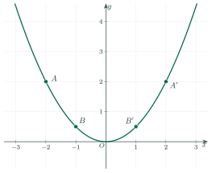
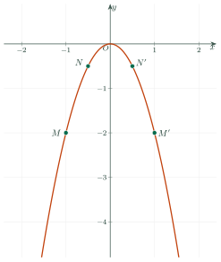
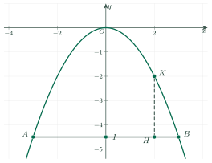

The Function y = ax² (a ≠ 0)Hàm số y = ax² (a ≠ 0)
Grade 9 · Topic: Quadratic Function and Quadratic EquationLớp 9 · Chủ đề: Hàm số y = ax² (a ≠ 0). Phương trình bậc hai một ẩn
1Lesson IntroductionGiới thiệu bài học
Learning goalsMục tiêu bài học
By the end of this lesson you can:
Sau bài học này, em có thể:
recognize the function \(y=ax^2\ (a\ne0)\) and make a table of values;
nhận biết được hàm số \(y=ax^2\ (a\ne0)\) và lập được bảng giá trị;
describe the graph: a parabola with vertex \(O\) and axis of symmetry \(Oy\);
mô tả được đồ thị: parabol có đỉnh \(O\), nhận \(Oy\) làm trục đối xứng;
draw the graph; find \(a\) or points of the graph from given data;
vẽ được đồ thị; tìm được \(a\) hoặc các điểm của đồ thị từ dữ kiện cho trước;
solve real-life problems (falling objects, parabolic arches, suspension bridges).
giải được bài toán thực tế (vật rơi, cổng parabol, cầu treo).
2Mathematical VocabularyTừ vựng Toán học
parabola – the graph of \(y=ax^2\).
Parabol – đồ thị của hàm số \(y=ax^2\).
vertex – the lowest (\(a\gt0\)) or highest (\(a\lt0\)) point, here \(O\).
Đỉnh – điểm thấp nhất (\(a\gt0\)) hoặc cao nhất (\(a\lt0\)), ở đây là \(O\).
table of values – values of \(y\) for chosen \(x\).
Bảng giá trị – các giá trị của \(y\) ứng với các giá trị của \(x\).
abscissa / ordinate – the \(x\)- / \(y\)-coordinate of a point.
Hoành độ / tung độ – tọa độ \(x\) / \(y\) của một điểm.
symmetric about \(Oy\) – \((x;\,y)\) and \((-x;\,y)\).
Đối xứng nhau qua \(Oy\) – \((x;\,y)\) và \((-x;\,y)\).
3Useful English PhrasesCụm từ tiếng Anh thường gặp
The graph of \(y=ax^2\) is a parabola with vertex \(O\).
Đồ thị hàm số \(y=ax^2\) là một parabol có đỉnh \(O\).
The parabola is symmetric about the \(y\)-axis.
Parabol nhận trục \(Oy\) làm trục đối xứng.
If \(a\gt0\), the graph lies above the \(x\)-axis.
Nếu \(a\gt0\) thì đồ thị nằm phía trên trục hoành.
Plot the points and join them with a smooth curve.
Vẽ các điểm rồi nối chúng bằng một đường cong trơn.
Substitute the coordinates of the point into the formula.
Thay tọa độ của điểm vào công thức.
4Prerequisite ReviewÔn tập kiến thức nền
Grade 8. A point \(M(x_0;\,y_0)\) lies on the graph of \(y=f(x)\) when \(y_0=f(x_0)\).
Lớp 8. Điểm \(M(x_0;\,y_0)\) thuộc đồ thị hàm số \(y=f(x)\) khi \(y_0=f(x_0)\).
Symmetry. \((x;\,y)\) and \((-x;\,y)\) are symmetric about \(Oy\).
Đối xứng. \((x;\,y)\) và \((-x;\,y)\) đối xứng nhau qua \(Oy\).
5TheoryLý thuyết
5.1 The function and its table of valuesHàm số y = ax² và bảng giá trị
DefinitionKhái niệm
A function given by \(y=ax^2\) with \(a\ne0\) is defined for every real \(x\); \(a\) is its coefficient. Example: the area of a square, \(S=a^2\); the distance fallen, \(s=4.9t^2\).
Hàm số cho bởi công thức \(y=ax^2\) với \(a\ne0\) xác định với mọi số thực \(x\); \(a\) là hệ số. Ví dụ: diện tích hình vuông \(S=a^2\); quãng đường rơi tự do \(s=4{,}9t^2\).
| \(x\)\(x\) | \(-2\)\(-2\) | \(-1\)\(-1\) | \(0\)\(0\) | \(1\)\(1\) | \(2\)\(2\) |
|---|---|---|---|---|---|
| \(y=\dfrac12x^2\)\(y=\dfrac12x^2\) | \(2\) | \(\dfrac12\) | \(0\) | \(\dfrac12\) | \(2\) |
5.2 The graphĐồ thị của hàm số y = ax² (a ≠ 0)

PropertiesTính chất
The graph of \(y=ax^2\) is a curve called a parabola with vertex \(O\); it is symmetric about \(Oy\).
Đồ thị hàm số \(y=ax^2\) là một đường cong gọi là parabol, có đỉnh \(O\) và nhận \(Oy\) làm trục đối xứng.
If \(a\gt0\), the graph lies above the \(x\)-axis and \(O\) is its lowest point. If \(a\lt0\), it lies below the \(x\)-axis and \(O\) is its highest point.
Nếu \(a\gt0\), đồ thị nằm phía trên trục hoành, \(O\) là điểm thấp nhất. Nếu \(a\lt0\), đồ thị nằm phía dưới trục hoành, \(O\) là điểm cao nhất.

Drawing the graphCách vẽ đồ thị
Make a table of values (\(x=0;\ \pm1;\ \pm2\)), plot the points, and join them with a smooth curve symmetric about \(Oy\).
Lập bảng giá trị (\(x=0;\ \pm1;\ \pm2\)), biểu diễn các điểm trên mặt phẳng tọa độ rồi nối bằng một đường cong trơn đối xứng qua \(Oy\).
6Worked ExamplesVí dụ có lời giải
ExampleVí dụ 1RememberingNhận biết – Table of valuesLập bảng giá trị
Complete the table of values of \(y=\dfrac12x^2\) for \(x=-2;\ -1;\ 0;\ 1;\ 2\) and name the points of the graph.
Lập bảng giá trị của hàm số \(y=\dfrac12x^2\) với \(x=-2;\ -1;\ 0;\ 1;\ 2\) và chỉ ra các điểm tương ứng của đồ thị.
Analysis: Square \(x\) first, then multiply by \(\dfrac12\).
Phân tích: Bình phương \(x\) trước rồi nhân với \(\dfrac12\).
\(y=2;\ \dfrac12;\ 0;\ \dfrac12;\ 2\).
\(y=2;\ \dfrac12;\ 0;\ \dfrac12;\ 2\).
Points: \(A(-2;\,2)\), \(B\left(-1;\,\dfrac12\right)\), \(O(0;\,0)\), \(B^{\prime}\left(1;\,\dfrac12\right)\), \(A^{\prime}(2;\,2)\) (see the first graph).
Các điểm: \(A(-2;\,2)\), \(B\left(-1;\,\dfrac12\right)\), \(O(0;\,0)\), \(B^{\prime}\left(1;\,\dfrac12\right)\), \(A^{\prime}(2;\,2)\) (xem đồ thị thứ nhất).
\(2;\ \dfrac12;\ 0;\ \dfrac12;\ 2\).
\(2;\ \dfrac12;\ 0;\ \dfrac12;\ 2\).
ExampleVí dụ 2UnderstandingThông hiểu – Points with a given ordinateĐiểm có tung độ cho trước
For \(y=-2x^2\):
a) describe its graph;
b) find the points of the graph whose ordinate is \(-\dfrac12\) and describe their symmetry.
Cho hàm số \(y=-2x^2\).
a) Nêu đặc điểm đồ thị.
b) Tìm các điểm thuộc đồ thị có tung độ bằng \(-\dfrac12\) và nhận xét về tính đối xứng của chúng.
Analysis: \(a=-2\lt0\).
Phân tích: \(a=-2\lt0\).
a) \(a=-2\lt0\): a parabola below the \(x\)-axis, vertex \(O\) is the highest point, symmetric about \(Oy\).
a) \(a=-2\lt0\): parabol nằm phía dưới trục hoành, đỉnh \(O\) là điểm cao nhất, nhận \(Oy\) làm trục đối xứng.
b) \(-2x^2=-\dfrac12\Rightarrow x^2=\dfrac14\Rightarrow x=\pm\dfrac12\). Points \(N\left(-\dfrac12;\,-\dfrac12\right)\), \(N^{\prime}\left(\dfrac12;\,-\dfrac12\right)\): symmetric about \(Oy\).
b) \(-2x^2=-\dfrac12\Rightarrow x^2=\dfrac14\Rightarrow x=\pm\dfrac12\). Hai điểm \(N\left(-\dfrac12;\,-\dfrac12\right)\), \(N^{\prime}\left(\dfrac12;\,-\dfrac12\right)\) đối xứng nhau qua \(Oy\).
\(\left(\pm\dfrac12;\,-\dfrac12\right)\).
\(\left(\pm\dfrac12;\,-\dfrac12\right)\).
ExampleVí dụ 3UnderstandingThông hiểu – Finding the coefficientTìm hệ số a
The parabola \(y=ax^2\) passes through \((2;\,2)\).
a) Find \(a\).
b) Find the ordinate of its point with abscissa \(-2\).
c) Find its points with ordinate 8.
Parabol \(y=ax^2\) đi qua điểm \((2;\,2)\).
a) Tìm \(a\).
b) Tìm tung độ của điểm thuộc parabol có hoành độ \(-2\).
c) Tìm các điểm thuộc parabol có tung độ bằng 8.
Analysis: Substitute \(x=2\), \(y=2\).
Phân tích: Thay \(x=2\), \(y=2\).
a) \(2=a\cdot2^2\Rightarrow a=\dfrac12\).
b) \(y=\dfrac12\cdot(-2)^2=2\).a) \(2=a\cdot2^2\Rightarrow a=\dfrac12\). b) \(y=\dfrac12\cdot(-2)^2=2\).
c) \(\dfrac12x^2=8\Rightarrow x^2=16\Rightarrow x=\pm4\): points \((-4;\,8)\) and \((4;\,8)\).
c) \(\dfrac12x^2=8\Rightarrow x^2=16\Rightarrow x=\pm4\): hai điểm \((-4;\,8)\) và \((4;\,8)\).
\(a=\dfrac12\); 2; \((\pm4;\,8)\).
\(a=\dfrac12\); 2; \((\pm4;\,8)\).
ExampleVí dụ 4Basic applicationVận dụng thấp – A parabolic archCổng hình parabol
An arch has the shape of the parabola \(y=ax^2\) (top at \(O\)). Its base \(AB\) is 6 m wide and its height \(OI\) is 4.5 m.
a) Find \(a\).
b) \(H\) lies on the base 2 m from \(I\); find the height \(HK\) of the arch above \(H\).
c) Can a truck 2 m wide and 3 m high pass through the middle?
Một cổng có dạng parabol \(y=ax^2\) (đỉnh cổng là \(O\)). Chân cổng \(AB\) rộng 6 m, chiều cao \(OI\) là 4,5 m.
a) Tìm \(a\).
b) Điểm \(H\) trên chân cổng cách \(I\) 2 m; tính chiều cao \(HK\) của cổng tại \(H\).
c) Một xe tải rộng 2 m, cao 3 m đi vào chính giữa cổng có qua được không?

Analysis: \(B(3;\,-4{,}5)\) lies on the parabola.
Phân tích: \(B(3;\,-4{,}5)\) thuộc parabol.
a) \(-4.5=a\cdot3^2\Rightarrow a=-\dfrac12\).
a) \(-4{,}5=a\cdot3^2\Rightarrow a=-\dfrac12\).
b) \(K(2;\,y_K)\) with \(y_K=-\dfrac12\cdot2^2=-2\), so \(HK=4.5-2=2.5\) m.
b) \(K(2;\,y_K)\) với \(y_K=-\dfrac12\cdot2^2=-2\) nên \(HK=4{,}5-2=2{,}5\) m.
c) The edge of the truck is at \(x=1\): the arch there is \(4.5-\dfrac12\cdot1^2=4\) m high \(\gt3\) m. The truck can pass.
c) Mép xe ở \(x=1\): cổng tại đó cao \(4{,}5-\dfrac12\cdot1^2=4\) m \(\gt3\) m. Xe qua được.
\(a=-\dfrac12\); \(HK=2.5\) m; yes.
\(a=-\dfrac12\); \(HK=2{,}5\) m; qua được.
ExampleVí dụ 5ApplicationVận dụng – A suspension bridgeCầu treo
A suspension bridge has two towers 75 m high and 400 m apart. Its cable has the shape of a parabola \(y=ax^2\) with its lowest point at \(O\) (on the road, midway between the towers). Find the height of the cable at a point 100 m from the center.
Một cây cầu treo có hai trụ cao 75 m, cách nhau 400 m. Dây cáp có dạng parabol \(y=ax^2\) với điểm thấp nhất là \(O\) (trên mặt cầu, chính giữa hai trụ). Tính chiều cao của dây cáp tại điểm cách tâm 100 m.
Analysis: The top of a tower is the point \((200;\,75)\).
Phân tích: Đỉnh trụ là điểm \((200;\,75)\).
\(75=a\cdot200^2\Rightarrow a=\dfrac{75}{40000}=\dfrac{3}{1600}\).
\(75=a\cdot200^2\Rightarrow a=\dfrac{75}{40000}=\dfrac{3}{1600}\).
At \(x=100\): \(y=\dfrac{3}{1600}\cdot100^2=18.75\) m.
Tại \(x=100\): \(y=\dfrac{3}{1600}\cdot100^2=18{,}75\) m.
18.75 m.
18,75 m.
7PracticeBài tập luyện tập
A. Multiple ChoiceA. Trắc nghiệm nhiều lựa chọn
For \(y=-\dfrac{1}{4}x^2\), find \(y\) when \(x=-6\).
Với hàm số \(y=-\dfrac{1}{4}x^2\), tính \(y\) khi \(x=-6\).
Answer: a. \(y=-\dfrac{1}{4}\cdot(-6)^2=-9\).
Đáp án a. \(y=-\dfrac{1}{4}\cdot(-6)^2=-9\).
The graph of \(y=ax^2\) passes through \(M(-4;\,-4)\). Find \(a\).
Đồ thị hàm số \(y=ax^2\) đi qua điểm \(M(-4;\,-4)\). Tìm \(a\).
Answer: c. \(-4=a\cdot(-4)^2\Rightarrow a=-\dfrac{1}{4}\).
Đáp án c. \(-4=a\cdot(-4)^2\Rightarrow a=-\dfrac{1}{4}\).
Which point lies on the graph of \(y=-\dfrac{1}{3}x^2\)?
Điểm nào thuộc đồ thị hàm số \(y=-\dfrac{1}{3}x^2\)?
Answer: d. Check \(y=-\dfrac{1}{3}\cdot x^2\) at each point.
Đáp án d. Thay tọa độ từng điểm vào \(y=-\dfrac{1}{3}\cdot x^2\).
B. True or FalseB. Đúng hoặc sai
Apart from the vertex \(O\), the graph of \(y=\dfrac{1}{4}x^2\) lies above the \(x\)-axis.
Ngoài đỉnh \(O\), đồ thị hàm số \(y=\dfrac{1}{4}x^2\) nằm phía trên trục hoành.
True. \(a=\dfrac{1}{4}\) is positive, so the parabola lies above the \(x\)-axis.
Đúng. \(a=\dfrac{1}{4}\) dương nên parabol nằm phía trên trục hoành.
\(A(5;\,-\dfrac{25}{4})\) lies on the graph of \(y=-\dfrac{1}{4}x^2\). Then \(B(-5;\,-\dfrac{25}{4})\) also lies on this graph.
\(A(5;\,-\dfrac{25}{4})\) thuộc đồ thị hàm số \(y=-\dfrac{1}{4}x^2\). Khi đó \(B(-5;\,-\dfrac{25}{4})\) cũng thuộc đồ thị này.
True. The graph is symmetric about \(Oy\): \((-5;\,-\dfrac{25}{4})\) lies on it; \((-5;\,\dfrac{25}{4})\) does not.
Đúng. Đồ thị nhận \(Oy\) làm trục đối xứng: \((-5;\,-\dfrac{25}{4})\) thuộc đồ thị, \((-5;\,\dfrac{25}{4})\) thì không.
C. Short AnswerC. Trả lời ngắn
The parabola \(y=ax^2\) passes through \((1;\,\dfrac{5}{2})\). Find \(a\) (decimal answer).
Parabol \(y=ax^2\) đi qua điểm \((1;\,\dfrac{5}{2})\). Tìm \(a\) (ghi dạng số thập phân).
Enter a number (e.g. -0.5).
Nhập một số (ví dụ -0,5).
Answer: 2.5. \(a=\dfrac{\dfrac{5}{2}}{1}=2.5\).
Đáp số: 2,5. \(a=\dfrac{\dfrac{5}{2}}{1}=2{,}5\).
Find the positive abscissa of the point on the graph of \(y=-2x^2\) whose ordinate is \(-2\).
Tìm hoành độ dương của điểm thuộc đồ thị hàm số \(y=-2x^2\) có tung độ bằng \(-2\).
Enter a number.
Nhập một số.
Answer: 1. \(-2x^2=-2\Rightarrow x^2=1\Rightarrow x=\pm1\); the positive one is \(1\).
Đáp số: 1. \(-2x^2=-2\Rightarrow x^2=1\Rightarrow x=\pm1\); hoành độ dương là \(1\).
D1. Self-practice – RememberingD1. Tự luyện – Mức Nhận biết
Which function of the variable \(z\) has the form \(y=az^2\ (a\ne0)\)?
Hàm số nào của biến \(z\) có dạng \(y=az^2\ (a\ne0)\)?
Answer: b. Only \(y=\dfrac{1}{3}z^2\) has this form, with \(a=\dfrac{1}{3}\).
Đáp án b. Chỉ \(y=\dfrac{1}{3}z^2\) có dạng này, với \(a=\dfrac{1}{3}\).
What is the vertex of the parabola \(y=\dfrac{1}{4}x^2\)?
Đỉnh của parabol \(y=\dfrac{1}{4}x^2\) là điểm nào?
Answer: d. The graph of \(y=ax^2\) has vertex \(O\).
Đáp án d. Đồ thị hàm số \(y=ax^2\) có đỉnh là \(O\).
What is the coefficient \(a\) of the function \(y=-\dfrac{1}{4}x^2\)?
Hệ số \(a\) của hàm số \(y=-\dfrac{1}{4}x^2\) là bao nhiêu?
Answer: d. \(a=-\dfrac{1}{4}\).
Đáp án d. \(a=-\dfrac{1}{4}\).
D2. Self-practice – UnderstandingD2. Tự luyện – Mức Thông hiểu
For \(y=\dfrac{1}{4}x^2\), the values of \(y\) at \(x=-3;\ -1;\ 3\) are…
Với \(y=\dfrac{1}{4}x^2\), giá trị của \(y\) tại \(x=-3;\ -1;\ 3\) lần lượt là…
Answer: c. Compute \(\dfrac{1}{4}\cdot x^2\) for each \(x\).
Đáp án c. Tính \(\dfrac{1}{4}\cdot x^2\) với từng \(x\).
For \(y=-\dfrac{1}{3}x^2\), compare \(y_1=y(-2)\) and \(y_2=y(4)\).
Với \(y=-\dfrac{1}{3}x^2\), so sánh \(y_1=y(-2)\) và \(y_2=y(4)\).
Answer: c. \(y_1=-\dfrac{4}{3}\), \(y_2=-\dfrac{16}{3}\).
Đáp án c. \(y_1=-\dfrac{4}{3}\), \(y_2=-\dfrac{16}{3}\).
The parabola \(y=ax^2\) passes through \((4;\,-48)\). Then…
Parabol \(y=ax^2\) đi qua điểm \((4;\,-48)\). Khi đó…
Answer: d. \(a=-3\).
Đáp án d. \(a=-3\).
D3. Self-practice – Basic applicationD3. Tự luyện – Mức Vận dụng thấp
Find the points of the graph of \(y=\dfrac{1}{4}x^2\) whose ordinate is \(\dfrac{1}{4}\).
Tìm các điểm thuộc đồ thị hàm số \(y=\dfrac{1}{4}x^2\) có tung độ bằng \(\dfrac{1}{4}\).
Answer: d. \(x^2=1\Rightarrow x=\pm1\); the two points are symmetric about \(Oy\).
Đáp án d. \(x^2=1\Rightarrow x=\pm1\); hai điểm đối xứng nhau qua \(Oy\).
A stone falls a distance \(s=4.9t^2\) (m) after \(t\) seconds. How far has it fallen after 3 s?
Một hòn đá rơi được quãng đường \(s=4{,}9t^2\) (m) sau \(t\) giây. Sau 3 giây hòn đá rơi được bao nhiêu mét?
Answer: c. \(s=4.9\cdot3^2=44.1\) m.
Đáp án c. \(s=4{,}9\cdot3^2=44{,}1\) m.
An arch has the shape of the parabola \(y=ax^2\) with its top at \(O\). Its base is 8 m wide and it is 4 m high. Find \(a\).
Một cổng có dạng parabol \(y=ax^2\) với đỉnh cổng là gốc tọa độ \(O\). Chân cổng rộng 8 m, cổng cao 4 m. Tìm \(a\).
Answer: b. The foot of the arch is the point \((4;\,-4)\): \(-4=a\cdot4^2\Rightarrow a=-\dfrac{1}{4}\).
Đáp án b. Chân cổng là điểm \((4;\,-4)\): \(-4=a\cdot4^2\Rightarrow a=-\dfrac{1}{4}\).
D4. Self-practice – Advanced applicationD4. Tự luyện – Mức Vận dụng
A parabolic arch is 12 m wide at the base and 9 m high. A truck 2 m wide and 4 m high drives through the middle. Can it pass?
Một cổng hình parabol rộng 12 m ở chân và cao 9 m. Một xe tải rộng 2 m, cao 4 m đi vào chính giữa cổng. Xe có qua được không?
Answer: b. With \(y=ax^2\), \(a=-\dfrac{9}{6^2}\); at \(x=1\) the arch is \(9+a\cdot1^2\approx8.75\) m above the ground, more than 4 m.
Đáp án b. Với \(y=ax^2\), \(a=-\dfrac{9}{6^2}\); tại \(x=1\) cổng cao \(9+a\cdot1^2\approx8{,}75\) m so với mặt đất, lớn hơn 4 m.
The total surface area of a cube is \(S=6a^2\) (cm²), where \(a\) is its edge. Find the edge of a cube with \(S=150\) cm².
Diện tích toàn phần của hình lập phương cạnh \(a\) là \(S=6a^2\) (cm²). Tìm cạnh của hình lập phương có \(S=150\) cm².
Answer: b. \(6a^2=150\Rightarrow a^2=25\Rightarrow a=5\).
Đáp án b. \(6a^2=150\Rightarrow a^2=25\Rightarrow a=5\).
A prism on a square base of side \(a\) has volume \(V=10a^2\). If \(a\) is multiplied by 5, \(V\) is multiplied by…
Hình lăng trụ đáy hình vuông cạnh \(a\) có thể tích \(V=10a^2\). Nếu \(a\) tăng 5 lần thì \(V\) tăng…
Answer: c. The quantity is proportional to the square: \(5^2=25\).
Đáp án c. Đại lượng tỉ lệ với bình phương: \(5^2=25\).
A. Multiple ChoiceA. Trắc nghiệm nhiều lựa chọn
For \(y=3x^2\), find \(y\) when \(x=-2\).
Với hàm số \(y=3x^2\), tính \(y\) khi \(x=-2\).
Answer: c. \(y=3\cdot(-2)^2=12\).
Đáp án c. \(y=3\cdot(-2)^2=12\).
The graph of \(y=ax^2\) passes through \(M(2;\,12)\). Find \(a\).
Đồ thị hàm số \(y=ax^2\) đi qua điểm \(M(2;\,12)\). Tìm \(a\).
Answer: b. \(12=a\cdot(2)^2\Rightarrow a=3\).
Đáp án b. \(12=a\cdot(2)^2\Rightarrow a=3\).
Which point lies on the graph of \(y=3x^2\)?
Điểm nào thuộc đồ thị hàm số \(y=3x^2\)?
Answer: c. Check \(y=3\cdot x^2\) at each point.
Đáp án c. Thay tọa độ từng điểm vào \(y=3\cdot x^2\).
B. True or FalseB. Đúng hoặc sai
Apart from the vertex \(O\), the graph of \(y=\dfrac{3}{2}x^2\) lies above the \(x\)-axis.
Ngoài đỉnh \(O\), đồ thị hàm số \(y=\dfrac{3}{2}x^2\) nằm phía trên trục hoành.
True. \(a=\dfrac{3}{2}\) is positive, so the parabola lies above the \(x\)-axis.
Đúng. \(a=\dfrac{3}{2}\) dương nên parabol nằm phía trên trục hoành.
\(A(-4;\,32)\) lies on the graph of \(y=2x^2\). Then \(B(4;\,-32)\) also lies on this graph.
\(A(-4;\,32)\) thuộc đồ thị hàm số \(y=2x^2\). Khi đó \(B(4;\,-32)\) cũng thuộc đồ thị này.
False. The graph is symmetric about \(Oy\): \((4;\,32)\) lies on it; \((4;\,-32)\) does not.
Sai. Đồ thị nhận \(Oy\) làm trục đối xứng: \((4;\,32)\) thuộc đồ thị, \((4;\,-32)\) thì không.
C. Short AnswerC. Trả lời ngắn
The parabola \(y=ax^2\) passes through \((-2;\,10)\). Find \(a\) (decimal answer).
Parabol \(y=ax^2\) đi qua điểm \((-2;\,10)\). Tìm \(a\) (ghi dạng số thập phân).
Enter a number (e.g. -0.5).
Nhập một số (ví dụ -0,5).
Answer: 2.5. \(a=\dfrac{10}{4}=2.5\).
Đáp số: 2,5. \(a=\dfrac{10}{4}=2{,}5\).
Find the positive abscissa of the point on the graph of \(y=3x^2\) whose ordinate is \(12\).
Tìm hoành độ dương của điểm thuộc đồ thị hàm số \(y=3x^2\) có tung độ bằng \(12\).
Enter a number.
Nhập một số.
Answer: 2. \(3x^2=12\Rightarrow x^2=4\Rightarrow x=\pm2\); the positive one is \(2\).
Đáp số: 2. \(3x^2=12\Rightarrow x^2=4\Rightarrow x=\pm2\); hoành độ dương là \(2\).
D1. Self-practice – RememberingD1. Tự luyện – Mức Nhận biết
Which function of the variable \(t\) has the form \(y=at^2\ (a\ne0)\)?
Hàm số nào của biến \(t\) có dạng \(y=at^2\ (a\ne0)\)?
Answer: c. Only \(y=\dfrac{1}{2}t^2\) has this form, with \(a=\dfrac{1}{2}\).
Đáp án c. Chỉ \(y=\dfrac{1}{2}t^2\) có dạng này, với \(a=\dfrac{1}{2}\).
What is the vertex of the parabola \(y=\dfrac{3}{2}x^2\)?
Đỉnh của parabol \(y=\dfrac{3}{2}x^2\) là điểm nào?
Answer: a. The graph of \(y=ax^2\) has vertex \(O\).
Đáp án a. Đồ thị hàm số \(y=ax^2\) có đỉnh là \(O\).
What is the coefficient \(a\) of the function \(y=-\dfrac{1}{3}x^2\)?
Hệ số \(a\) của hàm số \(y=-\dfrac{1}{3}x^2\) là bao nhiêu?
Answer: d. \(a=-\dfrac{1}{3}\).
Đáp án d. \(a=-\dfrac{1}{3}\).
D2. Self-practice – UnderstandingD2. Tự luyện – Mức Thông hiểu
For \(y=\dfrac{1}{3}x^2\), the values of \(y\) at \(x=-3;\ -2;\ -1\) are…
Với \(y=\dfrac{1}{3}x^2\), giá trị của \(y\) tại \(x=-3;\ -2;\ -1\) lần lượt là…
Answer: c. Compute \(\dfrac{1}{3}\cdot x^2\) for each \(x\).
Đáp án c. Tính \(\dfrac{1}{3}\cdot x^2\) với từng \(x\).
For \(y=\dfrac{1}{2}x^2\), compare \(y_1=y(2)\) and \(y_2=y(6)\).
Với \(y=\dfrac{1}{2}x^2\), so sánh \(y_1=y(2)\) và \(y_2=y(6)\).
Answer: c. \(y_1=2\), \(y_2=18\).
Đáp án c. \(y_1=2\), \(y_2=18\).
The parabola \(y=ax^2\) passes through \((1;\,-3)\). Then…
Parabol \(y=ax^2\) đi qua điểm \((1;\,-3)\). Khi đó…
Answer: c. \(a=-3\).
Đáp án c. \(a=-3\).
D3. Self-practice – Basic applicationD3. Tự luyện – Mức Vận dụng thấp
Find the points of the graph of \(y=-x^2\) whose ordinate is \(-4\).
Tìm các điểm thuộc đồ thị hàm số \(y=-x^2\) có tung độ bằng \(-4\).
Answer: b. \(x^2=4\Rightarrow x=\pm2\); the two points are symmetric about \(Oy\).
Đáp án b. \(x^2=4\Rightarrow x=\pm2\); hai điểm đối xứng nhau qua \(Oy\).
A stone falls a distance \(s=4.9t^2\) (m) after \(t\) seconds. How far has it fallen after 4 s?
Một hòn đá rơi được quãng đường \(s=4{,}9t^2\) (m) sau \(t\) giây. Sau 4 giây hòn đá rơi được bao nhiêu mét?
Answer: b. \(s=4.9\cdot4^2=78.4\) m.
Đáp án b. \(s=4{,}9\cdot4^2=78{,}4\) m.
An arch has the shape of the parabola \(y=ax^2\) with its top at \(O\). Its base is 10 m wide and it is 5 m high. Find \(a\).
Một cổng có dạng parabol \(y=ax^2\) với đỉnh cổng là gốc tọa độ \(O\). Chân cổng rộng 10 m, cổng cao 5 m. Tìm \(a\).
Answer: c. The foot of the arch is the point \((5;\,-5)\): \(-5=a\cdot5^2\Rightarrow a=-\dfrac{1}{5}\).
Đáp án c. Chân cổng là điểm \((5;\,-5)\): \(-5=a\cdot5^2\Rightarrow a=-\dfrac{1}{5}\).
D4. Self-practice – Advanced applicationD4. Tự luyện – Mức Vận dụng
A parabolic arch is 6 m wide at the base and 4.5 m high. A truck 2.4 m wide and 3 m high drives through the middle. Can it pass?
Một cổng hình parabol rộng 6 m ở chân và cao 4,5 m. Một xe tải rộng 2,4 m, cao 3 m đi vào chính giữa cổng. Xe có qua được không?
Answer: a. With \(y=ax^2\), \(a=-\dfrac{4.5}{3^2}\); at \(x=1.2\) the arch is \(4.5+a\cdot1.2^2\approx3.78\) m above the ground, more than 3 m.
Đáp án a. Với \(y=ax^2\), \(a=-\dfrac{4{,}5}{3^2}\); tại \(x=1{,}2\) cổng cao \(4{,}5+a\cdot1{,}2^2\approx3{,}78\) m so với mặt đất, lớn hơn 3 m.
The total surface area of a cube is \(S=6a^2\) (cm²), where \(a\) is its edge. Find the edge of a cube with \(S=384\) cm².
Diện tích toàn phần của hình lập phương cạnh \(a\) là \(S=6a^2\) (cm²). Tìm cạnh của hình lập phương có \(S=384\) cm².
Answer: d. \(6a^2=384\Rightarrow a^2=64\Rightarrow a=8\).
Đáp án d. \(6a^2=384\Rightarrow a^2=64\Rightarrow a=8\).
The area of a circle is \(S=\pi r^2\). If the radius is multiplied by 4, the area is multiplied by…
Diện tích hình tròn là \(S=\pi r^2\). Nếu bán kính tăng 4 lần thì diện tích tăng…
Answer: a. The quantity is proportional to the square: \(4^2=16\).
Đáp án a. Đại lượng tỉ lệ với bình phương: \(4^2=16\).
A. Multiple ChoiceA. Trắc nghiệm nhiều lựa chọn
For \(y=-2x^2\), find \(y\) when \(x=-2\).
Với hàm số \(y=-2x^2\), tính \(y\) khi \(x=-2\).
Answer: d. \(y=-2\cdot(-2)^2=-8\).
Đáp án d. \(y=-2\cdot(-2)^2=-8\).
The graph of \(y=ax^2\) passes through \(M(-1;\,-1)\). Find \(a\).
Đồ thị hàm số \(y=ax^2\) đi qua điểm \(M(-1;\,-1)\). Tìm \(a\).
Answer: b. \(-1=a\cdot(-1)^2\Rightarrow a=-1\).
Đáp án b. \(-1=a\cdot(-1)^2\Rightarrow a=-1\).
Which point lies on the graph of \(y=2x^2\)?
Điểm nào thuộc đồ thị hàm số \(y=2x^2\)?
Answer: c. Check \(y=2\cdot x^2\) at each point.
Đáp án c. Thay tọa độ từng điểm vào \(y=2\cdot x^2\).
B. True or FalseB. Đúng hoặc sai
Apart from the vertex \(O\), the graph of \(y=-3x^2\) lies below the \(x\)-axis.
Ngoài đỉnh \(O\), đồ thị hàm số \(y=-3x^2\) nằm phía dưới trục hoành.
True. \(a=-3\) is negative, so the parabola lies below the \(x\)-axis.
Đúng. \(a=-3\) âm nên parabol nằm phía dưới trục hoành.
\(A(2;\,\dfrac{4}{3})\) lies on the graph of \(y=\dfrac{1}{3}x^2\). Then \(B(-2;\,-\dfrac{4}{3})\) also lies on this graph.
\(A(2;\,\dfrac{4}{3})\) thuộc đồ thị hàm số \(y=\dfrac{1}{3}x^2\). Khi đó \(B(-2;\,-\dfrac{4}{3})\) cũng thuộc đồ thị này.
False. The graph is symmetric about \(Oy\): \((-2;\,\dfrac{4}{3})\) lies on it; \((-2;\,-\dfrac{4}{3})\) does not.
Sai. Đồ thị nhận \(Oy\) làm trục đối xứng: \((-2;\,\dfrac{4}{3})\) thuộc đồ thị, \((-2;\,-\dfrac{4}{3})\) thì không.
C. Short AnswerC. Trả lời ngắn
The parabola \(y=ax^2\) passes through \((3;\,18)\). Find \(a\) (decimal answer).
Parabol \(y=ax^2\) đi qua điểm \((3;\,18)\). Tìm \(a\) (ghi dạng số thập phân).
Enter a number (e.g. -0.5).
Nhập một số (ví dụ -0,5).
Answer: 2. \(a=\dfrac{18}{9}=2\).
Đáp số: 2. \(a=\dfrac{18}{9}=2\).
Find the positive abscissa of the point on the graph of \(y=-\dfrac{1}{2}x^2\) whose ordinate is \(-\dfrac{25}{2}\).
Tìm hoành độ dương của điểm thuộc đồ thị hàm số \(y=-\dfrac{1}{2}x^2\) có tung độ bằng \(-\dfrac{25}{2}\).
Enter a number.
Nhập một số.
Answer: 5. \(-\dfrac{1}{2}x^2=-\dfrac{25}{2}\Rightarrow x^2=25\Rightarrow x=\pm5\); the positive one is \(5\).
Đáp số: 5. \(-\dfrac{1}{2}x^2=-\dfrac{25}{2}\Rightarrow x^2=25\Rightarrow x=\pm5\); hoành độ dương là \(5\).
D1. Self-practice – RememberingD1. Tự luyện – Mức Nhận biết
Which function of the variable \(x\) has the form \(y=ax^2\ (a\ne0)\)?
Hàm số nào của biến \(x\) có dạng \(y=ax^2\ (a\ne0)\)?
Answer: c. Only \(y=\dfrac{1}{3}x^2\) has this form, with \(a=\dfrac{1}{3}\).
Đáp án c. Chỉ \(y=\dfrac{1}{3}x^2\) có dạng này, với \(a=\dfrac{1}{3}\).
What is the axis of symmetry of the parabola \(y=3x^2\)?
Trục đối xứng của parabol \(y=3x^2\) là gì?
Answer: c. The parabola is symmetric about \(Oy\).
Đáp án c. Parabol nhận \(Oy\) làm trục đối xứng.
What is the coefficient \(a\) of the function \(y=2x^2\)?
Hệ số \(a\) của hàm số \(y=2x^2\) là bao nhiêu?
Answer: b. \(a=2\).
Đáp án b. \(a=2\).
D2. Self-practice – UnderstandingD2. Tự luyện – Mức Thông hiểu
For \(y=\dfrac{1}{2}x^2\), the values of \(y\) at \(x=-1;\ 1;\ 3\) are…
Với \(y=\dfrac{1}{2}x^2\), giá trị của \(y\) tại \(x=-1;\ 1;\ 3\) lần lượt là…
Answer: b. Compute \(\dfrac{1}{2}\cdot x^2\) for each \(x\).
Đáp án b. Tính \(\dfrac{1}{2}\cdot x^2\) với từng \(x\).
For \(y=-\dfrac{1}{2}x^2\), compare \(y_1=y(4)\) and \(y_2=y(2)\).
Với \(y=-\dfrac{1}{2}x^2\), so sánh \(y_1=y(4)\) và \(y_2=y(2)\).
Answer: b. \(y_1=-8\), \(y_2=-2\).
Đáp án b. \(y_1=-8\), \(y_2=-2\).
The parabola \(y=ax^2\) passes through \((1;\,\dfrac{1}{3})\). Then…
Parabol \(y=ax^2\) đi qua điểm \((1;\,\dfrac{1}{3})\). Khi đó…
Answer: c. \(a=\dfrac{1}{3}\).
Đáp án c. \(a=\dfrac{1}{3}\).
D3. Self-practice – Basic applicationD3. Tự luyện – Mức Vận dụng thấp
Find the points of the graph of \(y=x^2\) whose ordinate is \(25\).
Tìm các điểm thuộc đồ thị hàm số \(y=x^2\) có tung độ bằng \(25\).
Answer: c. \(x^2=25\Rightarrow x=\pm5\); the two points are symmetric about \(Oy\).
Đáp án c. \(x^2=25\Rightarrow x=\pm5\); hai điểm đối xứng nhau qua \(Oy\).
A stone falls a distance \(s=4.9t^2\) (m) after \(t\) seconds. How far has it fallen after 2 s?
Một hòn đá rơi được quãng đường \(s=4{,}9t^2\) (m) sau \(t\) giây. Sau 2 giây hòn đá rơi được bao nhiêu mét?
Answer: c. \(s=4.9\cdot2^2=19.6\) m.
Đáp án c. \(s=4{,}9\cdot2^2=19{,}6\) m.
An arch has the shape of the parabola \(y=ax^2\) with its top at \(O\). Its base is 12 m wide and it is 9 m high. Find \(a\).
Một cổng có dạng parabol \(y=ax^2\) với đỉnh cổng là gốc tọa độ \(O\). Chân cổng rộng 12 m, cổng cao 9 m. Tìm \(a\).
Answer: d. The foot of the arch is the point \((6;\,-9)\): \(-9=a\cdot6^2\Rightarrow a=-\dfrac{1}{4}\).
Đáp án d. Chân cổng là điểm \((6;\,-9)\): \(-9=a\cdot6^2\Rightarrow a=-\dfrac{1}{4}\).
D4. Self-practice – Advanced applicationD4. Tự luyện – Mức Vận dụng
A parabolic arch is 8 m wide at the base and 4 m high. A truck 3 m wide and 3.5 m high drives through the middle. Can it pass?
Một cổng hình parabol rộng 8 m ở chân và cao 4 m. Một xe tải rộng 3 m, cao 3,5 m đi vào chính giữa cổng. Xe có qua được không?
Answer: d. With \(y=ax^2\), \(a=-\dfrac{4}{4^2}\); at \(x=1.5\) the arch is \(4+a\cdot1.5^2\approx3.44\) m above the ground, less than 3.5 m.
Đáp án d. Với \(y=ax^2\), \(a=-\dfrac{4}{4^2}\); tại \(x=1{,}5\) cổng cao \(4+a\cdot1{,}5^2\approx3{,}44\) m so với mặt đất, nhỏ hơn 3,5 m.
The total surface area of a cube is \(S=6a^2\) (cm²), where \(a\) is its edge. Find the edge of a cube with \(S=54\) cm².
Diện tích toàn phần của hình lập phương cạnh \(a\) là \(S=6a^2\) (cm²). Tìm cạnh của hình lập phương có \(S=54\) cm².
Answer: d. \(6a^2=54\Rightarrow a^2=9\Rightarrow a=3\).
Đáp án d. \(6a^2=54\Rightarrow a^2=9\Rightarrow a=3\).
A prism on a square base of side \(a\) has volume \(V=10a^2\). If \(a\) is multiplied by 3, \(V\) is multiplied by…
Hình lăng trụ đáy hình vuông cạnh \(a\) có thể tích \(V=10a^2\). Nếu \(a\) tăng 3 lần thì \(V\) tăng…
Answer: b. The quantity is proportional to the square: \(3^2=9\).
Đáp án b. Đại lượng tỉ lệ với bình phương: \(3^2=9\).
8Common MistakesLỗi thường gặp
Squaring a negative number. \((-3)^2=9\), so for \(y=2x^2\), \(y(-3)=18\), not \(-18\).
Bình phương số âm. \((-3)^2=9\) nên với \(y=2x^2\) thì \(y(-3)=18\), không phải \(-18\).
Only one point. For a given ordinate there are usually two points \((\pm x_0;\,y_0)\).
Chỉ tìm một điểm. Với một tung độ cho trước thường có hai điểm \((\pm x_0;\,y_0)\).
Joining points with straight segments. The graph is a smooth curve, not a broken line.
Nối các điểm bằng đoạn thẳng. Đồ thị là đường cong trơn, không phải đường gấp khúc.
Wrong side. \(a\lt0\): the parabola lies below the \(x\)-axis.
Sai vị trí. \(a\lt0\): parabol nằm phía dưới trục hoành.
9Lesson SummaryTổng kết
\(y=ax^2\ (a\ne0)\) is defined for every \(x\); its graph is a parabola with vertex \(O\), symmetric about \(Oy\).
\(y=ax^2\ (a\ne0)\) xác định với mọi \(x\); đồ thị là parabol đỉnh \(O\), nhận \(Oy\) làm trục đối xứng.
\(a\gt0\): above \(Ox\), lowest point \(O\); \(a\lt0\): below \(Ox\), highest point \(O\).
\(a\gt0\): nằm trên trục hoành, \(O\) thấp nhất; \(a\lt0\): nằm dưới trục hoành, \(O\) cao nhất.
\(M(x_0;\,y_0)\) is on the graph \(\iff y_0=ax_0^2\).
\(M(x_0;\,y_0)\) thuộc đồ thị \(\iff y_0=ax_0^2\).
Key English: parabola, vertex, table of values, abscissa, ordinate, symmetric about, graph.
Thuật ngữ cần nhớ (chạm vào để xem tiếng Anh): parabol, đỉnh (của parabol), bảng giá trị, hoành độ, tung độ, đối xứng nhau qua, đồ thị (của hàm số).